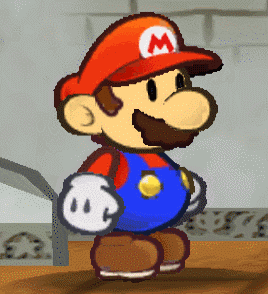
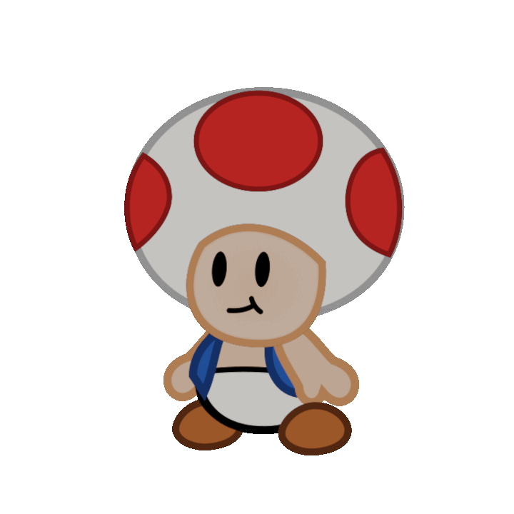
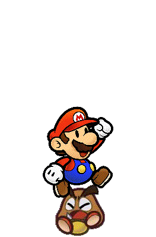
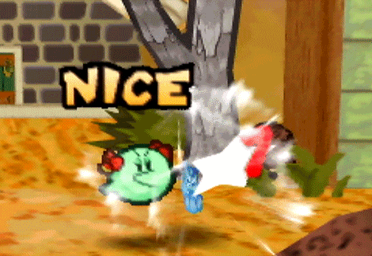

ESPAÇO — BLOCO TEXTO 01
Objetivos Acadêmicos
Minha graduação em Ciência da Computação representa uma oportunidade
de compreender a tecnologia além daquilo que utilizamos no dia a dia.
Quero entender os princípios que permitem que programas, sistemas,
dispositivos e diferentes soluções computacionais funcionem.
Durante essa trajetória, pretendo construir uma base consistente em
lógica de programação, algoritmos, estruturas de dados, matemática,
arquitetura de computadores, bancos de dados e engenharia de software.
Não quero apenas aprender a utilizar linguagens e ferramentas, mas
compreender os conceitos que existem por trás delas e como se
relacionam na construção de sistemas.
Também quero aproveitar a experiência universitária para explorar
áreas que ainda não conheço profundamente, participar de oportunidades
acadêmicas e desenvolver uma maneira cada vez mais estruturada de
analisar problemas. Meu objetivo é concluir essa formação com
conhecimentos que não estejam limitados às disciplinas, mas que
possam ser aplicados na construção de projetos reais.

ESPAÇO — BLOCO TEXTO 02
Evolução Técnica
Uma das minhas principais metas é desenvolver autonomia técnica.
Quero ser capaz de olhar para uma tecnologia, compreender seu
funcionamento, investigar suas possibilidades e encontrar maneiras
de utilizá-la ou modificá-la de acordo com uma necessidade.
Tenho interesse em aprofundar meus conhecimentos em linguagens como
C e C++, além de explorar outras ferramentas e tecnologias importantes
para o desenvolvimento de software. Também quero estudar áreas como
engenharia reversa, arquitetura de computadores, sistemas operacionais
e funcionamento de hardware, buscando compreender o que acontece
por trás das interfaces que utilizamos.
Pretendo desenvolver essa capacidade principalmente por meio da
prática: analisar códigos, experimentar soluções, identificar erros,
estudar projetos existentes e construir minhas próprias implementações.
Quero chegar a um ponto em que consiga transformar uma ideia em um
sistema funcional, entendendo cada etapa do processo e não dependendo
apenas de soluções prontas.

ESPAÇO — BLOCO TEXTO 03
Projetos Futuros
Tenho várias ideias que gostaria de transformar em projetos concretos,
mas uma delas ocupa um lugar especial na minha trajetória: o
Super Mario Bros X Ultimate (SMBXU). A proposta nasceu da admiração
pelo Super Mario Bros. X e da vontade de dar continuidade à experiência
de liberdade criativa que o jogo proporcionava.
Quero desenvolver uma versão mais completa e atualizada dessa ideia,
preservando aquilo que tornou o SMBX tão interessante: a possibilidade
de criar fases, construir mundos, combinar personagens e experimentar
diferentes mecânicas. Ao mesmo tempo, pretendo explorar novos recursos,
uma estrutura mais organizada e possibilidades que ampliem a experiência
de criação e de jogo.
Entre os objetivos estão desenvolver um editor integrado ao jogo,
permitir a criação de personagens, blocos, NPCs, itens e comportamentos
personalizados, além de construir sistemas que possibilitem compartilhar
e executar as aventuras criadas. Quero que o projeto seja mais do que
uma versão modificada de um jogo antigo: uma plataforma de criação
que possa continuar crescendo junto com as ideias de seus usuários.
O SMBXU também representa uma oportunidade de aplicar, em um projeto
de longo prazo, os conhecimentos que pretendo adquirir em programação,
desenvolvimento de software, arquitetura de sistemas e criação de jogos.

ESPAÇO — BLOCO TEXTO 04
Visão de Futuro
No futuro, quero trabalhar com tecnologia de uma maneira que me permita
participar da criação e do desenvolvimento de soluções, e não apenas
utilizar ferramentas que outras pessoas construíram. Tenho interesse
em compreender sistemas profundamente, explorar possibilidades que
ainda não foram aproveitadas e transformar ideias em projetos que
possam ser utilizados por outras pessoas.
Também pretendo ampliar minha experiência para além de uma única área.
Computação, programação, hardware e desenvolvimento de jogos possuem
conexões que considero especialmente interessantes. Quero ter liberdade
para transitar entre esses conhecimentos, aprender novas tecnologias
e encontrar maneiras de combiná-las em projetos próprios.
Sei que construir essa trajetória exige tempo, estudo e experiência.
Por isso, não espero alcançar todos os meus objetivos de uma só vez.
Quero desenvolver minhas habilidades gradualmente, construir um
portfólio consistente e conquistar cada etapa por meio daquilo que
consigo aprender e realizar.
Acima de tudo, quero preservar a curiosidade que me aproximou da
tecnologia desde o início: a vontade de descobrir como as coisas
funcionam, imaginar possibilidades e criar algo que antes existia
apenas na minha cabeça.